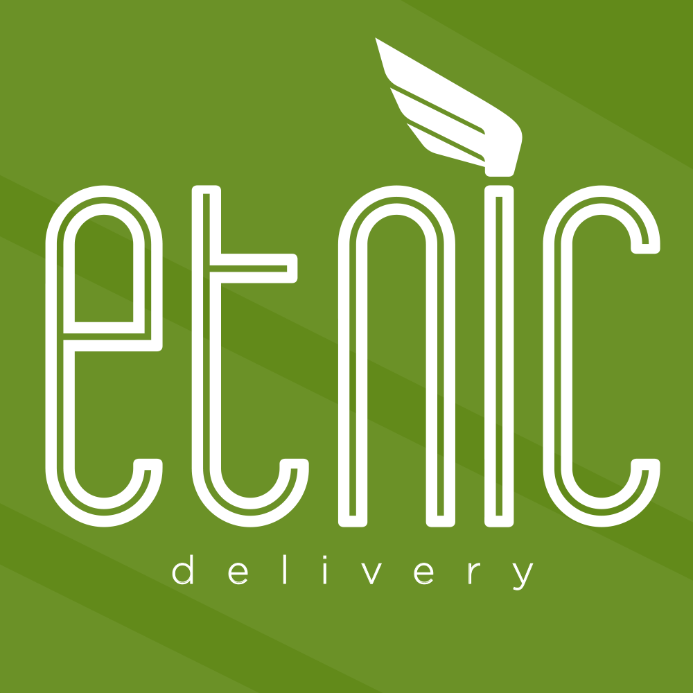
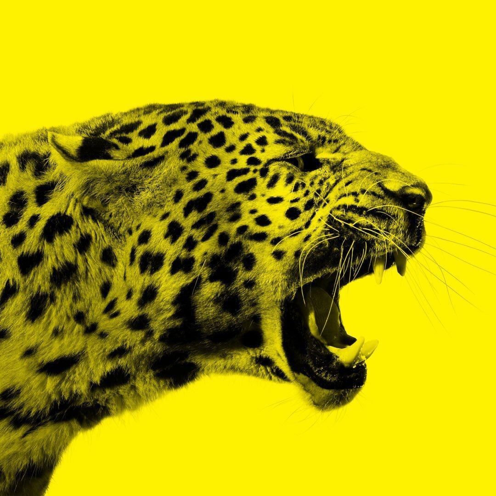

Jobs & Stages
This section presents a selection of professional experiences and internships that I have undertaken alongside my academic path. Through these roles, I have gained hands-on experience in audiovisual production, live events, and service management, working in dynamic environments that required adaptability, technical skills, and teamwork.
Mini Cuchi, dini Cuchi
In 2022, I completed an internship on the television program "Mini Cuchi, Dini Cuchi", during a special episode dedicated to Ticino.
Throughout this experience, I supported various departments on set and contributed to production tasks including crew logistics, meal organization, and transportation coordination.
Etnic Delivery
Between 2023 and 2025, I worked as a delivery driver for Ristorante Etnic in Lugano. In this role, I contributed to the management of the restaurant’s home delivery service, handling food deliveries using company vehicles and supporting the overall efficiency and reliability of the delivery operations.
JazzAscona
In 2023, I worked at JazzAscona as a video editor, cameraman, and sound recordist, producing content for interviews and live concerts. The content produced was primarily intended for digital distribution on platforms such as Instagram and YouTube, requiring editing choices optimized for social media formats and live performance coverage.
Locarno Film Festival
I worked at the Locarno Film Festival during the 2023 and 2024 editions, contributing as a video editor, cameraman, and sound recordist for various interviews. As with my work at JazzAscona, the final outputs were designed for online platforms such as Instagram and YouTube, requiring an editorial approach tailored to social media communication, pacing, and export specifications.
Spring Academy
During the 2024 edition of the Spring Academy, I worked as a sound recordist for the short film "Luca & Elle", directed by Asma Laajimi and supervised by filmmaker Alice Diop. My role focused on direct sound recording on set, collaborating closely with the director and the crew to ensure high-quality audio.
GO HOME